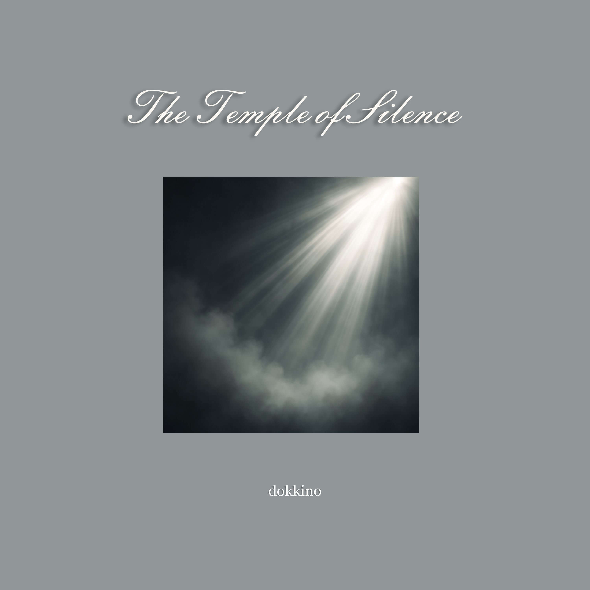

Автор оригинального текста: Сергей Мачуляк, 2025
Английская адаптация: Сергей Мачуляк
Музыка: Сергей Мачуляк
Релиз: 15 ноября 2025
© Сергей Мачуляк. Все права защищены.
The Temple of Silence — медитативная композиция в жанре Spiritual Ambient о внутреннем храме и пути от земных ролей и имён к тишине, в которой человек узнаёт дорогу домой.
The Temple of Silence — песня о храме, который невозможно возвести из камня. Он рождается из дыхания, света и тени, внутреннего огня и той тишины, которая остаётся, когда умолкает всё внешнее.
В начале пути двое строят этот храм вместе. Там, где встречаются два человека, возникают свет и тень: любовь и страх, близость и одиночество, надежда и сомнение. Но утро вновь открывает перед ними дорогу.
Слова пророка обращают человека не к далёким небесам, а в глубину собственного сердца. Путь, истина и небо уже находятся внутри, однако увидеть их можно только тогда, когда человек решается очистить сердце и взгляд от иллюзий.
Земная жизнь предстаёт как театр. Мы получаем имена, надеваем маски и исполняем временные роли: слуги, солдата, короля. Постепенно мы начинаем верить, что эти роли и есть наше настоящее «я».
Но спектакль однажды заканчивается. Маски и имена остаются на сцене, а перед лицом тишины исчезают власть, звания и различия.
Тишина здесь не означает пустоту. Она становится безмолвной песней, в которой растворяется шум отдельного эго. Поклон перед вечностью — не жест страха, а признание чего-то бесконечно большего, чем человеческие амбиции и земные представления о себе.
Дом, к которому ведёт эта тишина, — не место на карте. Это возвращение к собственной глубинной природе, существовавшей прежде имён, масок и разделений.
В финале храм наполняется «звуком тишины». Этот парадокс выражает центральную мысль песни: настоящая тишина не пуста. В ней человек способен услышать внутренний зов, который сопровождал его всю жизнь.
Храм завершён не тогда, когда возведены стены, а тогда, когда внутри больше нечего защищать и доказывать. Остаются только внутренний огонь, открытое сердце и тишина. И именно там находится дом.
We build a temple — not of stone,
But out of breath and shade alone.
Where two exist — there’s light and shade,
And morning shows the path we’ve made.
A prophet whispered once, “Inside,
The sky and truth in hearts reside.”
And if we dare — with hearts made pure,
Our eyes will see what will endure.
In this theatre — earth and sky,
We seek for truth, not just ask why.
We play our roles — the slave, the king,
The soldier bound by everything.
When all the masks and names are gone,
And we are left — the silent song,
We bow before eternity,
And find — it leads us home to be.
We’ll build our temple — not with walls,
But with the fire our soul recalls.
We’ll fill it softly with the sound
Of silence — where our home is found.